TANKWAY OF CHAOSFRONT LINEPURE DAMAGEREWORK & RELICS
HERO OVERVIEW
Cleaver — More Than a Frontline Tank
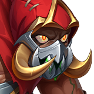
Cleaver is a frontline Tank from the Way of Chaos. His defining abilities combine exceptional durability, enemy displacement, crowd control and damage at close range.
Following his rework, Cleaver has gained a much stronger offensive identity. Pure Damage plays a larger role in his abilities, while the Relic system introduces healing reduction, additional area pressure, cleansing interactions and damage amplification.
His ability to pull protected enemies into the frontline remains one of his most recognizable mechanics. With the right team, that disruption can change the direction of an entire battle.
CHAOSHero faction
TANKPrimary class
PUREReworked damage
30Final listed Relic milestone
Rework identity: Cleaver now combines frontline protection with positioning disruption, Pure Damage, self-sacrifice interactions, healing reduction and increasingly powerful Relics.
UPDATED HERO KIT
Cleaver — All Four Skills Explained
The reworked Cleaver keeps his signature hook while increasing his ability to pressure enemies directly. His four skills provide a combination of disruption, persistent area damage, control and Strength-based durability.
Rusty Hook
Cleaver throws his hook toward the farthest enemy, pulling that hero into the frontline and dealing Pure Damage.
This remains one of Cleaver's most important tactical abilities because it allows him to disrupt the opposing formation and expose heroes who would otherwise remain protected at the back.
Following the rework, Cleaver's basic attacks also deal Pure Damage after the relevant ability interaction, giving him additional offensive pressure.
Core mechanic: Backline displacement + Pure Damage
Strategic advantage: A successful hook can pull a vulnerable support or damage dealer away from the safety of the enemy backline, creating opportunities for Cleaver and his teammates to eliminate that target.
Putrefaction
Putrefaction deals repeated Pure Damage to Cleaver himself and enemies standing nearby over several seconds.
The Legendary upgrade increases its offensive importance, turning Cleaver into a source of continuous close-range area pressure.
Its self-damage is especially important in Chaos compositions. Heroes who benefit from allied Health sacrifice can gain value from Cleaver repeatedly damaging himself.
Core mechanic: Repeated area Pure Damage + Self-sacrifice
Strategic advantage: Putrefaction can provide offensive value even while Cleaver is primarily protecting the frontline. It also creates important synergies with Aidan and Xe'Sha.
Mutilation
Cleaver strikes enemies directly in front of him, dealing Pure Damage and stunning nearby targets.
Its control component is particularly useful when an enemy has just been pulled into the frontline by Rusty Hook.
The ability's level-dependent stun interaction can be less reliable against enemies above the relevant skill threshold, but its combination of damage and disruption remains valuable.
Core mechanic: Frontline Pure Damage + Stun
Strategic advantage: Cleaver can disrupt an enemy's formation and then prevent nearby targets from immediately responding through additional control.
Strength improves his Health and Physical Attack, reinforcing his ability to remain active on the frontline while increasing the offensive attributes supporting his abilities.
Unlike activated skills, the passive bonus helps Cleaver from the beginning of the battle.
Core mechanic: Permanent Strength increase
Strategic advantage: A stronger base Health pool helps Cleaver survive incoming pressure and creates more opportunities to use his offensive and control abilities.
Understanding Cleaver: His rework combines Pure Damage and control with his traditional frontline role. Rusty Hook opens the formation, Putrefaction pressures nearby enemies, Mutilation disrupts them and Heavyweight supports his durability.
CLEAVER RELIC SYSTEM
Relics — Four Important Milestones
Cleaver's Relics strengthen his ability to pressure grouped enemies, reduce healing, remove negative effects and deal more damage when surrounded.
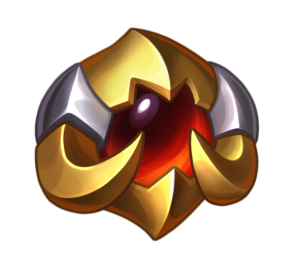
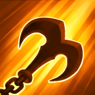
RELIC LEVEL 1
Miasma
Miasma applies an effect to the central enemy for 7 seconds.
While that effect remains active, it deals damage to enemies surrounding the affected target every 0.5 seconds.
This introduces another source of area pressure and allows Cleaver to affect enemies beyond the immediate frontline.
7-second duration · Damage every 0.5 seconds
Important interaction: When Putrefaction is upgraded through the relevant Relic, enemies affected by Miasma can also be affected by healing reduction.
RELIC LEVEL 10
Putrefaction — Healing Reduction
This upgrade applies 60% healing reduction to enemies affected by Putrefaction or Miasma.
If an opponent is affected by both abilities simultaneously, the healing-reduction effect can be doubled according to the Relic description.
This gives Cleaver another form of utility by making it harder for healing-dependent opponents to recover during the battle.
Healing reduction: 60% per qualifying effect
Strategic advantage: Healing suppression can become especially valuable against teams relying heavily on regeneration, sustained healing and long battles.
LEGENDARY RELIC · LEVEL 20
Heavyweight — Cleansing Interaction
Heavyweight gains an additional cleansing interaction through its Relic upgrade.
According to the original guide's description, whenever Cleaver or one of his allies takes damage from an enemy hero, negative effects are removed from the enemy involved in that interaction.
The effect remains active while Cleaver is alive.
Relic milestone: Level 20
Testing context: This Legendary Relic had not yet been unlocked during the battle testing documented in the original guide. Its complete practical impact was therefore not established by those tests.
LEGENDARY RELIC · LEVEL 30
Carnage — Damage Amplification
Carnage increases Cleaver's damage for each enemy standing near him.
This rewards Cleaver for fighting in close-range situations, particularly when several opponents have been drawn toward the frontline.
Its value increases with the number of nearby enemies, making positioning an important factor in its performance.
Relic milestone: Level 30
Testing context: Carnage had not been unlocked during the original testing, so its full performance was not included in the demonstrated battle results.
Important testing limitation: The original guide's tests did not include the unlocked Legendary Heavyweight and Carnage Relics. Their descriptions are preserved here, but those tests cannot establish their final battle performance.
DEFENSIVE DEVELOPMENT
Cleaver — Best Skin Priority
Cleaver's primary responsibility is surviving on the frontline. Armor, Health and Strength are therefore central to his development. The original guide recommends prioritizing defensive attributes before Physical Attack.
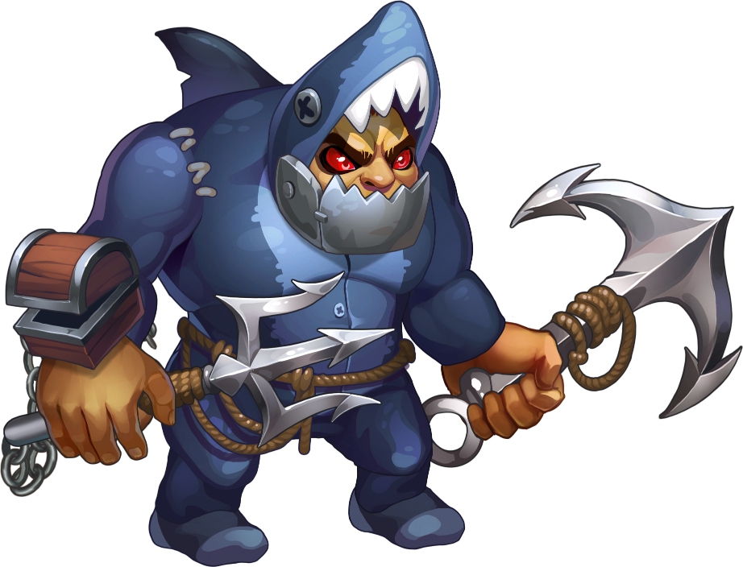
1
Masquerade Skin
Armor. Our first priority for reducing incoming Physical Damage. Especially valuable when facing hard-hitting physical frontline attackers.
2
Inner Demons & Barbarian Skins
Health. Both skins strengthen Cleaver's Health pool. Additional Health improves his frontline survival and contributes to his self-sacrifice-based abilities.
Prioritize these Health investments according to availability and your team's requirements.
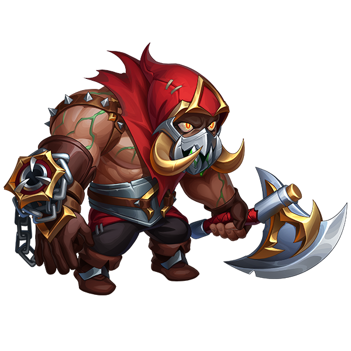
3
Default Skin
Strength. Increases Cleaver's primary attribute, supporting both Health and Physical Attack.
4
Lunar Skin
Toughness. Provides another defensive layer, especially useful when Cleaver's Health drops to dangerous levels.
5
Beach Skin
Magic Defense. Helps Cleaver resist magical opponents and maintain his frontline position against Mage-heavy teams.
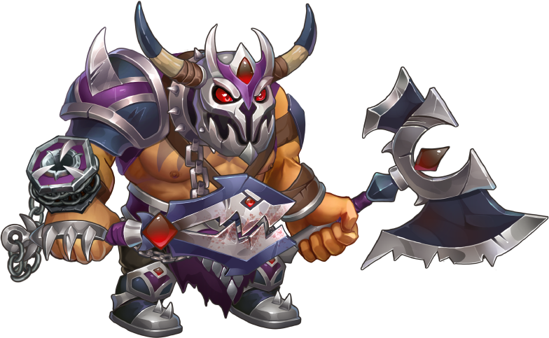
6
Champion Skin
Physical Attack. Improves his offensive attributes, but we prioritize defensive investment before this skin.
GOA development priority: Armor → Health → Strength → Toughness → Magic Defense → Physical Attack. Match these priorities to the original guide's recommended defensive progression rather than treating skin release order as an upgrade rule.
STAT INVESTMENT
Glyphs — Recommended Upgrade Order
1
Armor
Supports Cleaver's frontline protection against Physical Damage. Our first Glyph priority.
2
Health
Improves durability and provides more time for Cleaver to activate his hook, area damage and other abilities.
3
Strength
Improves Cleaver's primary attribute, providing both defensive and offensive development.
4
Magic Defense
Provides additional protection against magical damage, making it harder for Mages to eliminate Cleaver prematurely.
5
Physical Attack
Improves Cleaver's offensive output, but the original build prioritizes his survival before maximizing damage.
Initial recommendation: Bring every Glyph to Level 40 before investing heavily beyond that point, unless pursuing specific Skill Class requirements.
ARTIFACT DEVELOPMENT
Artifacts — Best Investment Priority
The original Cleaver guide prioritizes permanent defensive stats first, followed by the teamwide Armor bonus from his Weapon and then Strength from his Ring.
1. Artifact Book
Armor & Magic Defense.
Our first priority. The Book improves Cleaver's protection against both physical and magical damage, strengthening his ability to withstand attacks from different types of opponents.
2. Artifact Weapon
Teamwide Armor.
When Cleaver activates Rusty Hook, his Artifact Weapon provides an Armor bonus to his allies.
This adds defensive utility to his displacement mechanic, helping the whole team withstand Physical Damage.
3. Artifact Ring
Strength.
Increases Cleaver's primary attribute, strengthening his Health and contributing to his overall development.
Recommended order: Book → Weapon → Ring.
CORE ATTRIBUTES
Gift of the Elements
Recommended Investment — Maximum
Maximize Gift of the Elements as resources allow.
Cleaver relies on strong foundational stats to survive frontline pressure and continue using his control and offensive abilities.
Prioritize developing his overall survivability, especially Armor and Health, while continuing to build the primary attributes supporting his skills.
ADVANCED HERO DEVELOPMENT
Cleaver — Talisman Comparison
Cleaver has two talisman options that support different aspects of his build. One focuses on his traditional frontline durability, while the other provides a combination of offensive and defensive attributes.
First Talisman
Main attribute: Strength.
Additional attribute: Health.
Strength and Health reinforce Cleaver's core identity as a durable frontline Tank.
This combination helps him withstand enemy pressure and continue using his hook, control and area-damage abilities.
Availability: Eternal Frontier
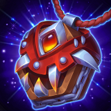
Second Talisman
Main attribute: Crushing.
Additional attribute: Toughness.
This option combines additional damage potential against weakened enemies with improved survivability during dangerous low-Health situations.
Availability: VIP Progression
GOA recommendation: Both Talismans can provide value. The first supports Cleaver's primary tank attributes, while the second creates a more specialized combination of Crushing and Toughness.
CHAOS INTERACTIONS
Cleaver — Hero Synergies
One of the most important parts of Cleaver's rework is the interaction between his self-damage and heroes who benefit from allied Health sacrifice.
Aidan — Chaos Sustain
Putrefaction damages Cleaver himself, creating allied Health sacrifice.
This interaction can provide additional value to Aidan in Chaos compositions, while Aidan's protective capabilities help the team remain active through longer fights.
Key advantage: A valuable combination of self-sacrifice mechanics and team protection.
Xe'Sha — Offensive Sacrifice Synergy
Cleaver's self-damage through Putrefaction can support Xe'Sha's offensive mechanics.
This transforms a mechanic that would normally be considered a disadvantage into a source of potential offensive value for the entire composition.
Key advantage: Turning allied Health sacrifice into additional offensive pressure.
Chaos strategy: Cleaver is not limited to traditional tanking. His self-sacrifice mechanic can create opportunities for partners who benefit from Health loss while still allowing him to disrupt the opposing formation.
BATTLE TESTING
Cleaver — Five Team Examples
The original guide documented five different Cleaver compositions. These examples demonstrate his flexibility and are not intended to suggest one universal team for every matchup.
TEAM 01 · CHAOS PRESSURE
Cleaver · Kayla · Crow · Guus · Aidan
Cleaver
Kayla
Crow
Guus
Aidan
This composition combines Cleaver's control and pressure with the offensive potential of Kayla and Crow.
Guus and Aidan help keep the team active during intense periods of the fight while Cleaver creates opportunities through positioning disruption.
TEAM 02 · AGGRESSIVE CONTROL
Cleaver · Crow · Peech · Kendle · Aidan
Cleaver
Crow
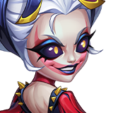
Peech
Kendle
Aidan
This setup explores a more aggressive but still durable Cleaver composition.
Crow contributes offensive pressure, Peech and Kendle provide additional tools, and Aidan supports longer battles through defensive utility.
TEAM 03 · SURVIVAL & CONTROL
Cleaver · Byrna · Guus · Kendle · Aidan
Cleaver
Byrna
Guus
Kendle
Aidan
A more survival-oriented composition.
Guus and Aidan help stabilize the team while Byrna and Kendle provide additional support and utility.
The longer Cleaver remains alive, the more opportunities he has to disrupt enemy positions and activate his Relic interactions.
TEAM 04 · PHYSICAL OFFENSE
Cleaver · Tristan · Yasmine · Guus · Fafnir
Cleaver
Tristan
Yasmine
Guus
Fafnir
Cleaver acts as the frontline anchor while Tristan and Yasmine contribute offensive pressure.
His durability and positioning control create space for the rest of the lineup to operate.
TEAM 05 · SUSTAIN & UTILITY
Cleaver · Phobos · Dorian · Kendle · Aidan
Cleaver
Phobos
Dorian
Kendle
Aidan
This lineup combines Cleaver's durability and control with several sources of sustain and utility.
Phobos contributes additional control, while Dorian and Aidan help the composition endure longer fights.
Battle-testing context: These teams were included in the original guide as examples of Cleaver's flexibility. They are not guaranteed victories and should be evaluated against the specific opponent, investment level and available Relics.
COUNTER STRATEGY
How to Counter Cleaver
Cleaver's hook, damage and frontline presence can be dangerous, but several heroes offer mechanics that interfere with his abilities or take advantage of the situations he creates.
HOOK INTERACTION
Dorian
If Cleaver pulls Dorian forward, Dorian's Vampirism Aura may begin supporting frontline allies instead.
This can create an unfavorable interaction for Cleaver by making opposing frontline heroes more difficult to eliminate.
DISPLACEMENT PROTECTION
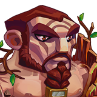
Andvari
Living Earth prevents protected allies from being displaced, interfering with Cleaver's attempt to pull those heroes through Rusty Hook.
This can preserve the opponent's positioning and prevent Cleaver from exposing vulnerable backline targets.
MAGICAL RETALIATION
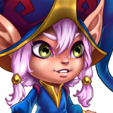
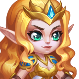
Peppy + Aurora
Peppy's shield combined with Aurora's Rainbow Halo can create significant magical retaliation against Cleaver.
This interaction can punish his continued frontline pressure and repeated attacks.
CHARM
Lian
Lian can interrupt Cleaver's hook interaction by Charming him when he targets her.
This can disrupt the timing and effectiveness of Rusty Hook.
TRANSFORMATION
Somna
Somna can transform Cleaver into a sheep when he attempts to hook her.
That transformation can interfere with one of his signature mechanics and prevent the hook from working as intended.
BLIND
Electra von Grave
Electra can apply Blind to Cleaver, causing affected attacks to miss.
This can reduce the offensive contribution of his attacks, depending on the timing and interaction of the abilities involved.
SURVIVABILITY
Martha
Martha can be surprisingly difficult to eliminate even after being pulled forward.
If she survives the positioning disruption, her team may gain enough time to recover and respond to Cleaver's pressure.
ENERGY DENIAL
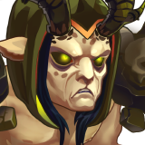
Jorgen
Torment of Powerlessness can prevent Cleaver from gaining Energy.
Delaying Rusty Hook can reduce his ability to disrupt enemy positioning at important moments of the fight.
Important: No counter guarantees victory. Cleaver's Relic investment, team composition, positioning and ability timing can significantly influence these interactions.
GODS OF ALLIANCE ANALYSIS
Final Verdict — The Reworked Cleaver
Cleaver's rework gives him considerably more depth than a traditional frontline Tank.
He now combines Pure Damage, crowd control, positioning disruption, area pressure and healing reduction while maintaining the durability required to anchor his team.
Rusty Hook: Disrupts enemy positioning and exposes protected targets.
Putrefaction: Provides repeated area damage and important Chaos sacrifice interactions.
Mutilation: Adds close-range control and Pure Damage.
Heavyweight: Reinforces Cleaver's primary attribute and durability.
Relics: Expand his value through Miasma, healing suppression, cleansing interactions and damage amplification.
The five compositions documented in the original guide demonstrate Cleaver's ability to function in different environments, including aggressive, defensive and control-oriented teams.
The final two Legendary Relics were not unlocked during those original tests, so their full combat performance remains outside the scope of that testing.
GOA recommendation: Cleaver is no longer defined only by his hook. His ability to combine frontline durability with Chaos interactions, Pure Damage and control makes him a versatile option when properly supported.
VIDEO GUIDE & BATTLE ANALYSIS
Watch — Cleaver Complete Hero Guide
Watch the original Gods of Alliance analysis covering Cleaver's rework, development priorities, team synergies and battle testing.